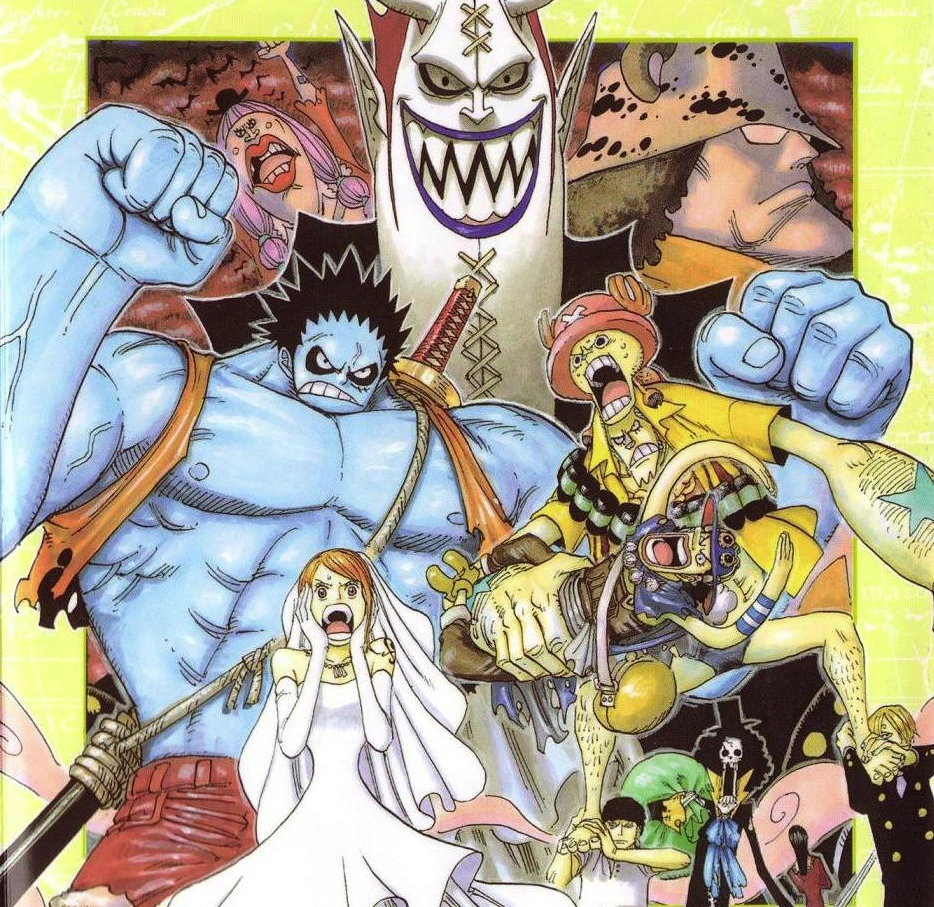

During their journey through the Florian Triangle, the Straw Hats arrive on a seemingly haunted island called Thriller Bark, where they encounter the Warlord Gecko Moria. Using his Devil Fruit abilities, Moria steals the Straw Hats' shadows. With the help of a mysterious talking skeleton named Brook, the crew must regain their shadows before sunrise in order to survive.
Arriving in the Devil's Sea: Luffy Meets a Talking Skeleton
At first, Usopp thinks they might already have arrived at Fish-Man Island, but he is quickly corrected by the others who explain to him (in a teasing manner) that they are in fact in the Florian Triangle (he did not know this, since he was not around when Kokoro told the others about it). Upset that he was not notified about this and scared about the ghosts, he quickly grabs his exorcism set to rebuke any evil spirits. Suddenly, he and the rest of the crew hear an ominous song resounding throughout the fog and discover a ghost ship that has suddenly appeared behind them with a skeleton singing Binks' Sake.
Luffy, finding all this hilarious, asks Brook if the skeleton can poop, to which Brook replies yes only for Sanji to berate them both for their choice of questions. Opting for his own take on things, he then starts to shout questions at Brook about what happened to him and the ship, only to be interrupted by Luffy, who much to the shock of everybody else, asks Brook to join his crew. Brook casually agrees to, much to the horror of everyone else present. Leaving the ghost ship with them, Brook goes back with them to the ship and ends up having dinner with the crew. Brook is explaining his Devil Fruit ability when Usopp (in Exorcist attire) notices that he has no shadow and no reflection.
Brook explains how his shadow was stolen, and sadly he cannot leave the foggy Florian Triangle with the Straw Hats for the sun would disintegrate him. Not wanting his new friends to get hurt, Brook refuses to reveal the culprit. Nonetheless, meeting the crew has brightened his dreary existence, and Brook is about to play the violin when a ghost appears. Just then, the gates of Thriller Bark capture the Thousand Sunny. Brook warns the Straw Hats to escape and runs across the water to Thriller Bark.
Later, the Red Hair Pirates were preparing to leave Foosha Village for good. Luffy had decided that he would not try to join them and declared that he would form his own crew that would be stronger than Shanks', find the greatest treasure, and become the Pirate King. To take Luffy up on his word, Shanks gave him his straw hat and told him to return it once he had surpassed him. As the Red Hair Pirates set sail, Shanks and Beckman both anticipated Luffy doing big things in the future.
Brook's Surprising Connection; Retrieve the Shadows before Sunrise!
In the tunnel of the freezer, all the leaders of Thriller Bark are excited about their plans for the future. They enter the chamber, where this enormous giant twenty times Moria's size rests.[16] Moria declares it was once the great conqueror known as Oars. Moria walks on one of the chains supporting Oars and inserts Luffy's shadow. The monster awakens and roars for food. Nami, Usopp, and Chopper fall out of Kumashi and are discovered. However, Oars roars out for food again and they run off. They head down the stairs when suddenly Usopp and Chopper are enveloped in explosions. Absalom grabs Nami and turns himself and her invisible and escapes. Usopp and Chopper are set upon by dozens of soldier zombies. However, just as they are being overwhelmed, Franky and Robin show up and begin purifying zombies.
They begin to plan their counterattack, with Luffy stating that it would be easier to just go and beat Moria than to look for their individual shadows, leaves Nami up to Sanji (burning with rage over the idea of a wedding) and Usopp, Franky decides to go help Brook with Zoro joining him. Before setting out, Usopp gives everyone a bag of salt and says that they should definitely finish their objectives before dawn, or they will be at a disadvantage. Meanwhile, Oars has climbed to the top of the main mast of Thriller Bark, amazed that it is a ship, and declares that he will become Pirate King with it while Hildon reports to Moria that the Straw Hats have woken up and are rampaging about destroying zombies and that Absalom's wedding has started with all the Zombie Generals attending. Perona says she will take care of them and Hogback requests to be made second in command. Luffy, Sanji, Usopp, Robin, and Chopper are taking the upper bridge to where Moria is when Luffy and Sanji get hit with the negative ghosts. Oars comes crashing down destroying the bridge and taking Sanji and Usopp down with him to the lower bridge where Zoro and Franky are, where they attacked what they thought was a wall but is actually Oars.
Luffy, Robin, and Chopper continue to where Moria is when they encounter Dr. Hogback along the way. Chopper says he will fight Hogback and that Luffy should go on ahead, Robin stays behind as well to deal with Cindry. Chopper tells Hogback that he no longer recognizes him as a doctor. Luffy finds Moria, who treats him with indifference. Back at the bridge, Oars gets up causing Sanji, Zoro, Franky, and Usopp to panic over his sheer size, but Oars does not even notice them. He makes a hat out of part of the mansion then walks away saying he will be Pirate King. After voicing their concerns over the destroyed bridge, they realize Franky has already built a new one and are all shocked by the speed and quality Franky put into it. They then encounter Perona in her room where she reveals she has the powers of the Horo Horo no Mi and are all hit with her negative spirits and fall to the ground. Perona then orders her zombies to capture them but are destroyed by Usopp's Salt Star. Perona sends more ghosts through him, but they have no effect as Usopp states he is already negative, thoroughly shocking Perona. Usopp tells the others to get up and says he will deal with her. Meanwhile, the wedding has progressed, and Absalom is about to kiss a still unconscious Nami.
The Nightmare Never Ends: Shadow's Asgard and Tyrant Kuma
However, their victory is short-lived as Moria arises from Oars' cockpit. After giving the Straw Hats a speech about how the New World is out of their league, he uses his ultimate technique: Shadow's Asgard. By absorbing all of his zombie's shadows (including Cindry, Inuppe, Captain John, Lola, Jigoro, Hildon, Buhichuck, Gyoro, Nin, and Bao, and Oars), he transforms into a giant, deformed version of himself, resembling a lizard or a gecko. As he displays his newfound, destructive power, the pirates realize that they have one more problem at their hands, the sun is rising. As the Rolling Pirates (minus Lola) run for cover so they do not burn away, Luffy activates Gear 2 in order to combat, and defeat Moria's new form.
Luffy begins to repeatedly strike at Moria's stomach, causing the latter to lose control of the shadows and release a small number of them. Trying to hold the remaining shadows in, he manages to trap Luffy within a black box made of shadows before crushing it. Emerging from wreckage, Luffy uses all his strength to combine Gear 2 and Gear 3, launching his enlarged body into Moria with the strengths of both forms. The impact of this move causes Thriller Bark's mast to fall on top of Moria, forcing him to spew out all the shadows just as the sun comes out and the Straw Hats start burning away
The celebration is cut short when Kuma appears and is ordered by the World Government to revive Moria and eliminate everyone who witnessed his defeat. Kuma takes out a few of the Rolling Pirates by launching paw-shaped air blasts similar to Rokuogan. He then teleports again and appears in front of the Straw hats and claims he will start with Zoro
The Straw Hats and Rolling Pirate simultaneously shout "NEVER!", and Kuma merely replies, "What a pity" and launches the bomb. The blast destroys most of Thriller Bark, though this does not succeed in killing the Straw Hats but knocks out all of them except Zoro. Zoro surprise attacks Kuma, slicing into his shoulder, exposing his Pacifista modifications. This attack only proves to irritate the Warlord of the Sea and he easily defeats Zoro. Knowing death was upon him, Zoro offers to trade his life for Luffy's. Then, Sanji appears and asks Kuma to take his life instead of Zoro's. Hearing this, Zoro knocks out Sanji unconscious. Kuma agrees to Zoro's offer and uses his Devil Fruit to project Luffy's pain onto Zoro. Kuma then teleports to the entrance to the ship, musing about how Dragon has raised a good son with a fine crew.
When everyone comes to, Luffy is perfectly fine, but Zoro is nowhere to be seen. Sanji finds Zoro standing alone outside the ruins. He is still alive, but his blood is splattered in a wide radius around him. Zoro shortly states that nothing happened.